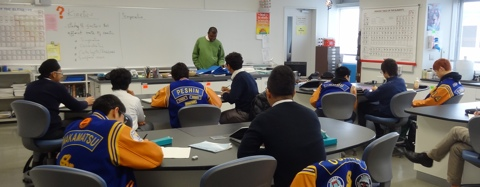

IB Chemistry SL
Course Description
IB Standard Level Chemistry is an in-depth introduction to modern chemistry and problem solving. Chemistry as an experimental science combines both academic study with the acquisition of practical and experimental skills. In addition to the theory of chemistry, heavy emphasis is placed on practical laboratory work with students completing a minimum of 40 hours of experimental work, which includes an interdisciplinary project with the other standard level science classes.
This laboratory work reinforces concepts introduced in class and challenges students to pose their own scientific problems, construct hypotheses, and design procedures to answer these problems. The project is a collaborative activity that aims to encourage an understanding of the relationship between scientific disciplines and the nature of scientific method. It also allows for an understanding of the limitations of scientific study with emphasis on interdisciplinary cooperation and processes rather than the end product. The teaching takes an experimental approach throughout the course and is student centered allowing every individual student to achieve their maximum potential. Students cover a variety of core topics including Quantitative Chemistry, Atomic Structure, Periodicity, Bonding, Energetics, Kinetics, Equilibrium, Acids and Bases, Electrochemistry and Organic Chemistry. Students also study two of the seven designated option topics such as 'medicine & drugs' and 'environmental chemistry' etc. This course prepares the student for the IB standard level examination offered in May and is also a prerequisite for IB Higher Level Chemistry. The course therefore accommodates students who wish to study science at post-secondary level and those who do not.